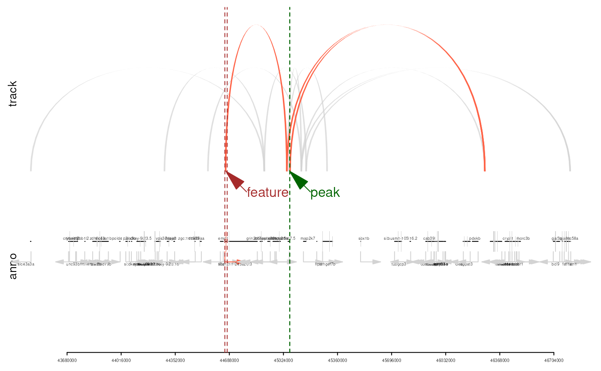

vignettes/annoLinker.Rmd
annoLinker.RmdAbstract
Annotating genomic regions through chromatin interaction links.
Functional annotation of genomic regions is a key step in understanding regulatory mechanisms underlying gene expression and phenotype variation. Traditional annotation methods typically rely on the linear proximity of genomic features, such as linking peaks to the nearest gene, which can overlook the complex three-dimensional organization of the genome. Recent advances in chromatin conformation capture technologies (e.g., Hi-C, ChIA-PET, PLAC-seq, HiCAR) have revealed that regulatory elements often interact with distant genomic loci through chromatin loops, bringing enhancers, promoters, and other elements into physical contact.
annoLinker is designed to bridge this gap by annotating
genomic regions through chromatin interaction links. Rather than relying
solely on linear genomic distance, annoLinker integrates
chromatin contact information to establish biologically meaningful
connections between regulatory regions and their potential target genes.
This approach complements traditional annotation methods by enabling the
functional assignment of distal elements such as enhancers and
silencers.
The package provides a streamlined workflow to link user-defined
genomic regions with genomic interactions (loops), annotate the
associated genes, and visualize the resulting interaction networks. By
leveraging interaction data, annoLinker enables users to
explore functional relationships that are invisible in linear genome
coordinates and to generate more comprehensive biological
interpretations from genomic assays such as ATAC-seq, ChIP-seq, or
Methyl-seq.
if (!require("BiocManager", quietly = TRUE))
install.packages("BiocManager")
BiocManager::install("jianhong/annoLinker")The input to annoLinker consists of three components:
the genomic regions of interest to be annotated, the annotation data,
and the chromatin interaction information. Both the peak list and
annotation data should be provided as GRanges objects,
while genomic interactions can be supplied as either
GInteractions or Pairs objects.
By default, annoLinker annotates peaks that fall within
the promoter region, defined as 5 kb upstream to 5 kb
downstream of the annotated features. Users can optionally modify this
definition to annotate regions within the gene body or
downstream segments instead.
The output is returned as an annoLinkerResult object,
which can be easily converted into a GRanges or
data.frame for downstream analysis and visualization.
library(annoLinker)
library(rtracklayer)
library(TxDb.Drerio.UCSC.danRer10.refGene)
library(org.Dr.eg.db)
txdb <- TxDb.Drerio.UCSC.danRer10.refGene
org <- org.Dr.eg.db
extPath <- system.file('extdata', package='annoLinker')
## load peaks
peaks <- rtracklayer::import(file.path(extPath, 'peaks.bed'))
## load interactions
interactions <- rtracklayer::import(file.path(extPath, 'interaction.bedpe'))
## load annotation data
annoData <- genes(txdb)
anno <- annoLinker(peaks, annoData, interactions, verbose=TRUE)
class(anno)## [1] "annoLinkerResult"
## attr(,"package")
## [1] "annoLinker"
head(anno, n=2)## GRanges object with 2 ranges and 7 metadata columns:
## seqnames ranges strand | feature_name feature_start
## <Rle> <IRanges> <Rle> | <character> <integer>
## [1] chr1 45062825-45063844 * | 100151507 44660095
## [2] chr1 45062825-45063844 * | 100038798 45052323
## feature_end feature_strand gene_id peak_bin
## <integer> <Rle> <character> <character>
## [1] 44674627 + 100151507 chr1:45060001-45070000
## [2] 45060215 - 100038798 chr1:45060001-45070000
## feature_bin
## <character>
## [1] chr1:44660001-44670000
## [2] chr1:45050001-45060000
## -------
## seqinfo: 2 sequences from an unspecified genome; no seqlengths
anno_peaks(anno)[c(1, 2)]## GRanges object with 2 ranges and 7 metadata columns:
## seqnames ranges strand | feature_name feature_start
## <Rle> <IRanges> <Rle> | <character> <integer>
## [1] chr1 45062825-45063844 * | 100151507 44660095
## [2] chr1 45062825-45063844 * | 100038798 45052323
## feature_end feature_strand gene_id peak_bin
## <integer> <Rle> <character> <character>
## [1] 44674627 + 100151507 chr1:45060001-45070000
## [2] 45060215 - 100038798 chr1:45060001-45070000
## feature_bin
## <character>
## [1] chr1:44660001-44670000
## [2] chr1:45050001-45060000
## -------
## seqinfo: 2 sequences from an unspecified genome; no seqlengths## GRanges object with 2 ranges and 7 metadata columns:
## seqnames ranges strand | feature_name feature_start
## <Rle> <IRanges> <Rle> | <character> <integer>
## [1] chr1 45062825-45063844 * | 100151507 44660095
## [2] chr1 45062825-45063844 * | 100038798 45052323
## feature_end feature_strand gene_id peak_bin
## <integer> <Rle> <character> <character>
## [1] 44674627 + 100151507 chr1:45060001-45070000
## [2] 45060215 - 100038798 chr1:45060001-45070000
## feature_bin
## <character>
## [1] chr1:44660001-44670000
## [2] chr1:45050001-45060000
## -------
## seqinfo: 2 sequences from an unspecified genome; no seqlengthsThe plotEvidence() function allows users to visualize
the annotation evidence chain, illustrating how genomic regions are
linked through chromatin interactions. Users can plot the annotation
evidence as either a network graph or a genomic track
integrated with gene annotation information.
## plot the evidence for the first annotation
n <- 1
plotEvidence(anno, event=1,
output='htmlWidget')
plotEvidence(anno, event=1,
output='trackPlot',
txdb=TxDb.Drerio.UCSC.danRer10.refGene,
org=org.Dr.eg.db)
## NULL## R version 4.5.1 (2025-06-13)
## Platform: x86_64-pc-linux-gnu
## Running under: Ubuntu 24.04.3 LTS
##
## Matrix products: default
## BLAS: /usr/lib/x86_64-linux-gnu/openblas-pthread/libblas.so.3
## LAPACK: /usr/lib/x86_64-linux-gnu/openblas-pthread/libopenblasp-r0.3.26.so; LAPACK version 3.12.0
##
## locale:
## [1] LC_CTYPE=en_US.UTF-8 LC_NUMERIC=C
## [3] LC_TIME=en_US.UTF-8 LC_COLLATE=en_US.UTF-8
## [5] LC_MONETARY=en_US.UTF-8 LC_MESSAGES=en_US.UTF-8
## [7] LC_PAPER=en_US.UTF-8 LC_NAME=C
## [9] LC_ADDRESS=C LC_TELEPHONE=C
## [11] LC_MEASUREMENT=en_US.UTF-8 LC_IDENTIFICATION=C
##
## time zone: Etc/UTC
## tzcode source: system (glibc)
##
## attached base packages:
## [1] stats4 stats graphics grDevices utils datasets methods
## [8] base
##
## other attached packages:
## [1] org.Dr.eg.db_3.22.0
## [2] TxDb.Drerio.UCSC.danRer10.refGene_3.4.6
## [3] GenomicFeatures_1.61.8
## [4] AnnotationDbi_1.71.2
## [5] Biobase_2.69.1
## [6] rtracklayer_1.69.1
## [7] GenomicRanges_1.61.8
## [8] Seqinfo_0.99.4
## [9] IRanges_2.43.8
## [10] S4Vectors_0.47.6
## [11] BiocGenerics_0.55.4
## [12] generics_0.1.4
## [13] annoLinker_0.99.1
##
## loaded via a namespace (and not attached):
## [1] strawr_0.0.92 RColorBrewer_1.1-3
## [3] rstudioapi_0.17.1 jsonlite_2.0.0
## [5] magrittr_2.0.4 farver_2.1.2
## [7] rmarkdown_2.30 fs_1.6.6
## [9] BiocIO_1.19.0 ragg_1.5.0
## [11] vctrs_0.6.5 memoise_2.0.1
## [13] Rsamtools_2.25.3 RCurl_1.98-1.17
## [15] base64enc_0.1-3 htmltools_0.5.8.1
## [17] S4Arrays_1.9.2 progress_1.2.3
## [19] curl_7.0.0 Rhdf5lib_1.31.1
## [21] rhdf5_2.53.6 SparseArray_1.9.1
## [23] Formula_1.2-5 sass_0.4.10
## [25] parallelly_1.45.1 bslib_0.9.0
## [27] htmlwidgets_1.6.4 desc_1.4.3
## [29] Gviz_1.53.1 httr2_1.2.1
## [31] cachem_1.1.0 GenomicAlignments_1.45.5
## [33] igraph_2.2.1 lifecycle_1.0.4
## [35] pkgconfig_2.0.3 Matrix_1.7-4
## [37] R6_2.6.1 fastmap_1.2.0
## [39] MatrixGenerics_1.21.0 future_1.67.0
## [41] digest_0.6.37 colorspace_2.1-2
## [43] textshaping_1.0.4 Hmisc_5.2-4
## [45] RSQLite_2.4.3 filelock_1.0.3
## [47] progressr_0.17.0 httr_1.4.7
## [49] abind_1.4-8 compiler_4.5.1
## [51] bit64_4.6.0-1 htmlTable_2.4.3
## [53] S7_0.2.0 backports_1.5.0
## [55] BiocParallel_1.43.4 DBI_1.2.3
## [57] biomaRt_2.65.16 rappdirs_0.3.3
## [59] DelayedArray_0.35.4 rjson_0.2.23
## [61] tools_4.5.1 foreign_0.8-90
## [63] future.apply_1.20.0 nnet_7.3-20
## [65] glue_1.8.0 restfulr_0.0.16
## [67] InteractionSet_1.37.1 rhdf5filters_1.21.4
## [69] grid_4.5.1 checkmate_2.3.3
## [71] cluster_2.1.8.1 gtable_0.3.6
## [73] BSgenome_1.77.3 trackViewer_1.45.3
## [75] ensembldb_2.33.2 data.table_1.17.8
## [77] hms_1.1.4 XVector_0.49.3
## [79] pillar_1.11.1 stringr_1.5.2
## [81] dplyr_1.1.4 BiocFileCache_2.99.6
## [83] lattice_0.22-7 deldir_2.0-4
## [85] bit_4.6.0 biovizBase_1.57.1
## [87] tidyselect_1.2.1 Biostrings_2.77.2
## [89] knitr_1.50 gridExtra_2.3
## [91] ProtGenerics_1.41.0 SummarizedExperiment_1.39.2
## [93] xfun_0.53 matrixStats_1.5.0
## [95] visNetwork_2.1.4 stringi_1.8.7
## [97] UCSC.utils_1.5.1 lazyeval_0.2.2
## [99] yaml_2.3.10 evaluate_1.0.5
## [101] codetools_0.2-20 cigarillo_0.99.2
## [103] interp_1.1-6 tibble_3.3.0
## [105] BiocManager_1.30.26 cli_3.6.5
## [107] rpart_4.1.24 systemfonts_1.3.1
## [109] jquerylib_0.1.4 dichromat_2.0-0.1
## [111] Rcpp_1.1.0 GenomeInfoDb_1.45.13
## [113] globals_0.18.0 grImport_0.9-7
## [115] dbplyr_2.5.1 png_0.1-8
## [117] XML_3.99-0.19 parallel_4.5.1
## [119] pkgdown_2.1.3 ggplot2_4.0.0
## [121] blob_1.2.4 prettyunits_1.2.0
## [123] jpeg_0.1-11 latticeExtra_0.6-31
## [125] AnnotationFilter_1.33.0 bitops_1.0-9
## [127] txdbmaker_1.5.7 listenv_0.9.1
## [129] VariantAnnotation_1.55.2 scales_1.4.0
## [131] crayon_1.5.3 BiocStyle_2.37.1
## [133] rlang_1.1.6 KEGGREST_1.49.2